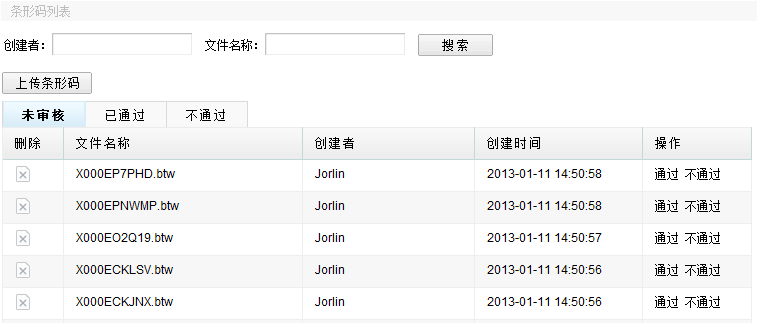
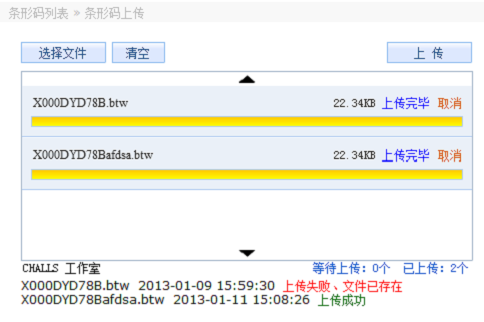

条形码管理用于上传条形码文件，供物流部在物料调拨处直接下载。

功能一，上传条形码，点击上传，可选择一批文件，然后上传即可，下面会有提示是否上传成功，若存在重名不会覆盖提示失败。

功能二，删除文件，点击前面的删除图标，可以删除文件，像上述说的存在重名的文件会失败，而不是覆盖，可以在此删除再上传。
功能三，审核操作，包括审核通过与不通过。
在物料调拨处，点击助记码，若匹配到文件存在，并且已经审核，则可下载条形码文件。